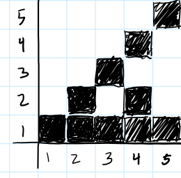
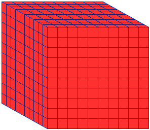
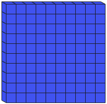

Number
Sign in to Overleaf and use this template to write your solutions.
-
Create a "grid" chart of factors. Label both axes with numbers 1 through 20. For each number \(x\) on the
horizontal axis, fill in the boxes above that number if the \(y\) value is a factor of \(x\). Your grid will
start like this:
What patterns do you observe?
- Create a \(10 \times 10\) grid and label each axis \(1\) through \(10\). For each square in the grid, write the GCD of the \(x\) and \(y\) coordinate of that square. What patterns do you observe? Create a 3D version of this chart by stacking objects (i.e., small blocks) at each square to represent the GCD.
-
Two numbers \(a\) and \(b\) are said to be relatively prime if \(\gcd(a,b)=1\).
- Demonstrate that \(77\) and \(45\) either are or are not relatively prime by factoring them to find their GCD.
- Use the \(\gcd\) algorithm to determine if \(77\) and \(45\) are relatively prime.
- The number \(23\) is prime, so Jed says that \(23\) must be relatively prime with every other positive integer. Give a counterexample to Jed's conjecture.
- Despite overgeneralizing, Jed was on to something. Improve his conjecture about primes and relative primes.
-
In base-10, we can use base-10 blocks to represent numbers:
 
- Sketch what the first few base-2 blocks might look like.
- Depict the base-2 reprsentation of \(1011\) in a sketch using base-2 blocks.
-
Convert the following binary numbers to decimal:
- 111
- 10001
- 1010101
- 11100001
- 110011
- 100011
-
Convert the following decimal numbers to binary:
- 7
- 100
- 63
- 64
- 15
- 16
- The standard algorithm for addition works in every base. Demonstrate adding the binary numbers \(101\) and \(11\). If that goes well, try adding larger numbers like \(100111+1010\).
-
We saw how to create rock constructions representing numbers as rows of their divisors.
There are infinitely many numbers that have only two rock constructions.
Let's call those numbers C2 type numbers for having only 2 constructions possible.
Show that every pile with an even number of rocks more than two can be made by combining two C2 type numbers. <<<<<<< HEAD For example, 16 can be made from 5 and 11. ======= For example, 16 can be made from 5 and 11. >>>>>>> 1c09c1b194966f7161651b061da2893dc814fc4e - Create a ternary (base-3) number system. You can use any three appropriate symbols you like. Demonstrate counting and basic arithmetic in your system.
- Demonstrate the square root algorithm by approximating the square root of \(52\), starting with an initial guess of 26.
-
Read: Henri Poincaré, Science and Reason, Book I, Chapter IV: “Chance”, Sections I and II.
- Briefly descrbe the three examples of fortuitous chance given by Poincaré.
-
Poincaré writes:
But, even if it were the case that the natural laws had no longer any secret for us, we could still only know the initial situation approximately. [...] it may happen that small differences in the initial conditions produce very great ones in the final phenomena. A small error in the former will produce an enormous error in the latter. Prediction becomes impossible, and we have the fortuitous phenomenon.
This describes what has come to be known as sensitive dependence on initial conditions, or the butterfly effect. We will be using data to make predictions in this course. How might sensitive dependence on initial conditions affect our predictions?